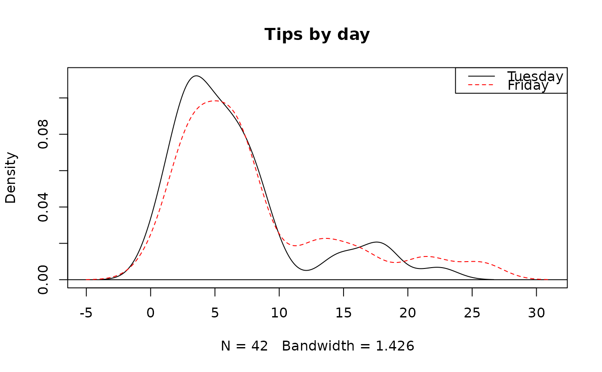
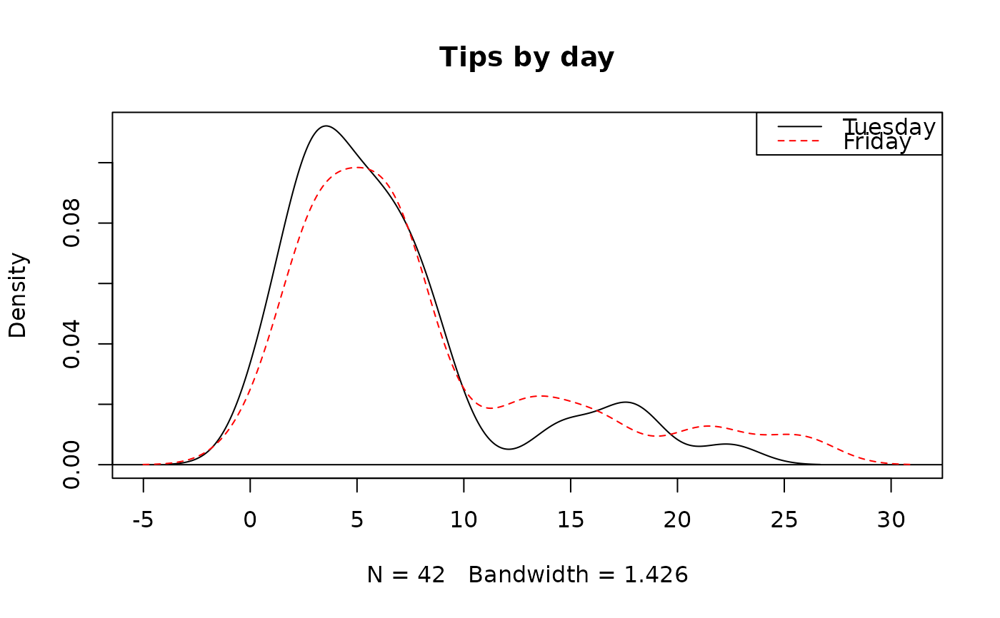

Compute kernel density plots, written in the same structure as
boxPlot. Histograms can be automatically added for teaching
purposes.
Usage
densityPlot(
x,
fact = NULL,
bw = "nrd0",
histo = c("none", "faded", "hollow"),
breaks = "Sturges",
fading = "0E",
fadingBorder = "25",
lty = NULL,
lwd = 1,
col = c("black", "red", "blue"),
key = NULL,
add = FALSE,
adjust = 1,
kernel = c("gaussian", "epanechnikov", "rectangular", "triangular", "biweight",
"cosine", "optcosine"),
weights = NULL,
n = 512,
from,
to,
na.rm = FALSE,
xlim = NULL,
ylim = NULL,
main = "",
...
)Arguments
- x
A numerical vector.
- fact
A character or factor vector defining the grouping for data in
x.- bw
Bandwidth. See
density.- histo
Whether to plot a faded histogram (
'faded') or hollow histogram ('hollow') in the background. By default, no histogram will be plotted.- breaks
The
breaksargument for histPlot ifhistois'faded'or'hollow'.- fading
Character value of hexadecimal, e.g.
'22'or'5D', describing the amount of fading inside the rectangles of the histogram ifhisto='faded'.- fadingBorder
Character value of hexadecimal, e.g.
'22'or'5D', describing the amount of fading of the rectangle borders of the histogram ifhistois'faded'or'hollow'.- lty
Numerical vector describing the line type for the density curve(s). Each element corresponds to a different level of the argument
fact.- lwd
Numerical vector describing the line width for the density curve(s). Each element corresponds to a different level of the argument
fact.- col
Numerical vector describing the line color for the density curve(s). Each element corresponds to a different level of the argument
fact.- key
An argument to specify ordering of the factor levels.
- add
If
TRUE, the density curve is added to the plot.- adjust
Argument passed to
densityto adjust the bandwidth.- kernel
Argument passed to
densityto select the kernel used.- weights
Argument passed to
densityto weight observations.- n
Argument passed to
densityto specify the detail in the density estimate.- from
Argument passed to
densityspecifying the lowest value to include in the density estimate.- to
Argument passed to
densityspecifying the largest value to include in the density estimate.- na.rm
Argument passed to
densityspecifying handling ofNAvalues.- xlim
x-axis limits.
- ylim
y-axis limits.
- main
Title for the plot.
- ...
If
add=FALSE, then additional arguments toplot.
Examples
# hollow histograms
histPlot(tips$tip[tips$day == "Tuesday"],
hollow = TRUE, xlim = c(0, 30),
lty = 1, main = "Tips by day"
)
histPlot(tips$tip[tips$day == "Friday"],
hollow = TRUE, border = "red",
add = TRUE, main = "Tips by day"
)
legend("topright",
col = c("black", "red"),
lty = 1:2, legend = c("Tuesday", "Friday")
)
 # density plots
densityPlot(tips$tip, tips$day,
col = c("black", "red"), main = "Tips by day"
)
legend("topright",
col = c("black", "red"),
lty = 1:2, legend = c("Tuesday", "Friday")
)

densityPlot(tips$tip,
histo = "faded",
breaks = 15, main = "Tips by day"
)
# density plots
densityPlot(tips$tip, tips$day,
col = c("black", "red"), main = "Tips by day"
)
legend("topright",
col = c("black", "red"),
lty = 1:2, legend = c("Tuesday", "Friday")
)

densityPlot(tips$tip,
histo = "faded",
breaks = 15, main = "Tips by day"
)
 densityPlot(tips$tip,
histo = "hollow",
breaks = 30, fadingBorder = "66",
lty = 1, main = "Tips by day"
)
densityPlot(tips$tip,
histo = "hollow",
breaks = 30, fadingBorder = "66",
lty = 1, main = "Tips by day"
)